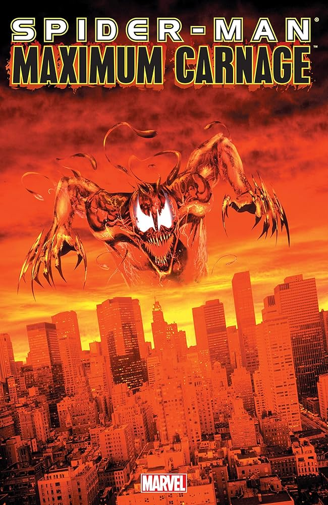
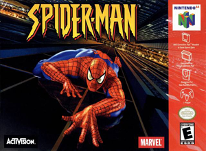
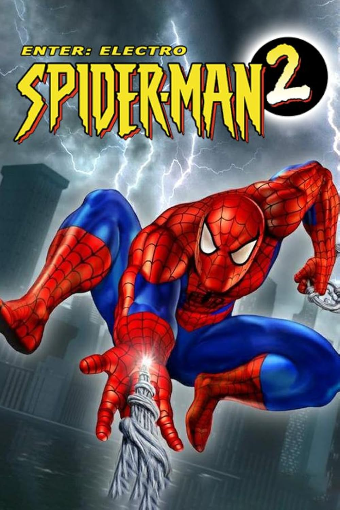

Spider-man Maximum Carnage
🕷️ Spider-Man: Maximum Carnage (1994) Inspirado nos quadrinhos, este beat 'em up coloca Spider-Man e Venom contra Carnage e sua gangue, em um jogo desafiador lançado para Super Nintendo e Sega Genesis.
Spider-man
🎮 Spider-Man (2000) No primeiro grande jogo 3D do herói, Spider-Man precisa limpar seu nome após ser acusado injustamente, enfrentando vilões clássicos e explorando a cidade de forma inédita.
SPIDER-MAN 2 ELECTRO
⚡ Spider-Man 2: Enter Electro (2001) A sequência do jogo anterior traz Electro como vilão principal, com novas fases e inimigos, aumentando a variedade de batalhas e desafios no PlayStation.